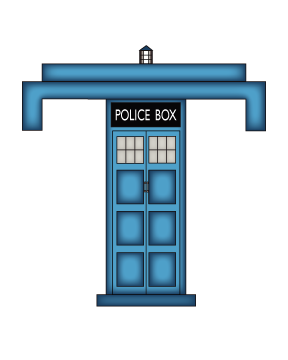
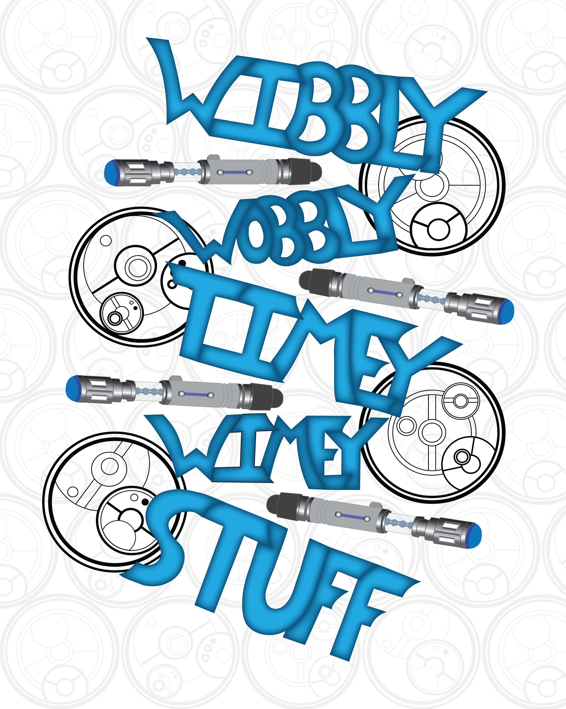

Hand-Lettered Initial Capital Letter

For this project, we were asked to pick a theme for which I chose the show,Doctor Who.
The chosen theme would link all the assignments that we did in the semester together and be used to make a book. The first couple of assignments were designed by hand lettering which is drawing out letters then putting them in the computer to be designed. First, we had to hand letter a capital letter. I designed a capital T
that was made to look like a TARDIS, which is a time machine from the show. Then we had to hand letter a saying, and I chose Wibbly Wobbly Timey Wimey.
Finally, we had an alternative type project, which is using any random materials to create words. I used fish sticks and pudding to create a food combination from the show and I used the British saying, instead of the American saying, which is fish fingers. I also used pudding as an alternative to custard, which was the food from the show, because they look similar, and it was more readily available. We then were tasked with making a 20 to 40 page spread on the theme we picked including all the assignments from earlier in the year. In the end, we hand bound the book into an accordion fold because it would be the easiest to showcase our work.